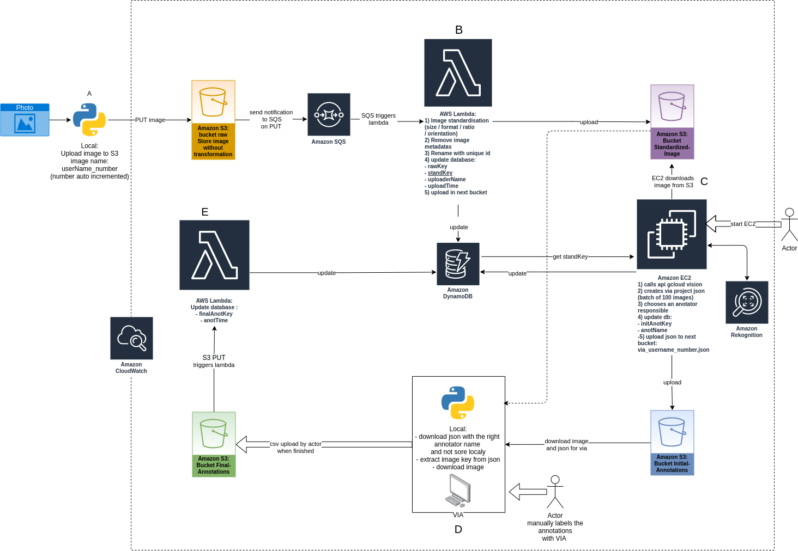

Opteeq¶
library to read digitalised paper receipts.
AWS structure¶
Configuration¶
Before use edit conf.json. You need to edit:
user: your username.
bucket_raw: bucket where raw image are upload
bucket_standardized: bucket where standardized image are upload
bucket_initial_annotation: bucket where initial json annotation are uploaded
dynamoDB: region and table name
If the part that you will use don’t need one of this parameter you can ignore it.
A) Rename upload¶
Rename all the file from a folder and upload it to AWS S3 bucket.
Quick run¶
pip3 install -r requirements.txtconfig
conf.jsonpython3 rename_upload.py
C) Via converter¶
Import google vision annotation to VGG Image Annotator.
Quick run¶
pip3 install -r requirements.txtSet up google cloud vision
python3 ec2.pyto used conversion locally without EC2 you can usevia_json_localfunction ( tools/via/via_converter.py).User data for EC2 (compatible Debian and Ubuntu):
#!/bin/bash sudo apt update sudo apt install python3-pip -y cd home/$USER git clone https://github.com/assansanogo/Opteeq.git cd Opteeq pip3 install -r requirements.txt
Go to VGG Image Annotator 2, open a VIA project and choose output.json. (If image file aren’t find, download the HTML file, project settings change default path)
Result¶
|
|
|